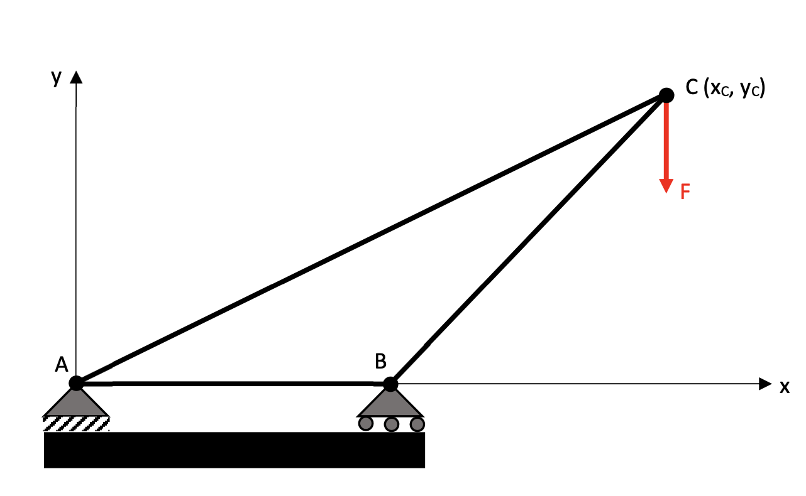
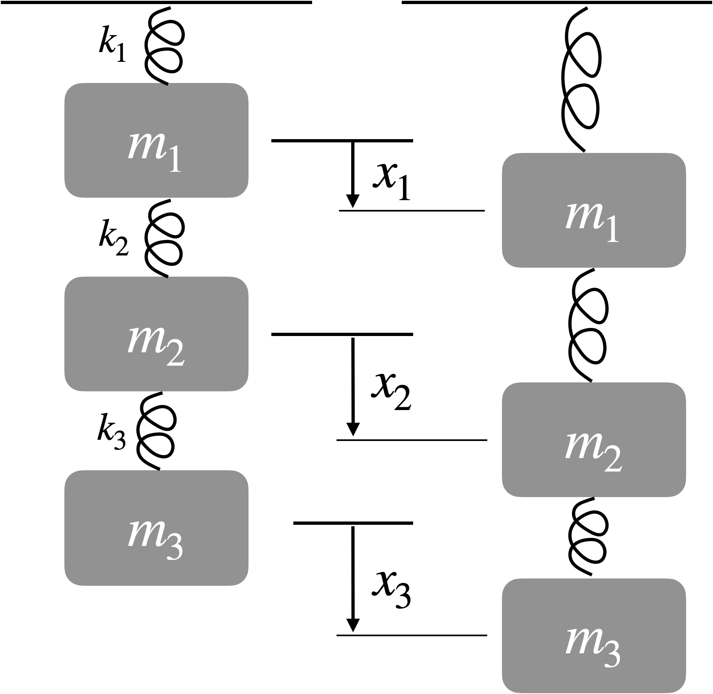
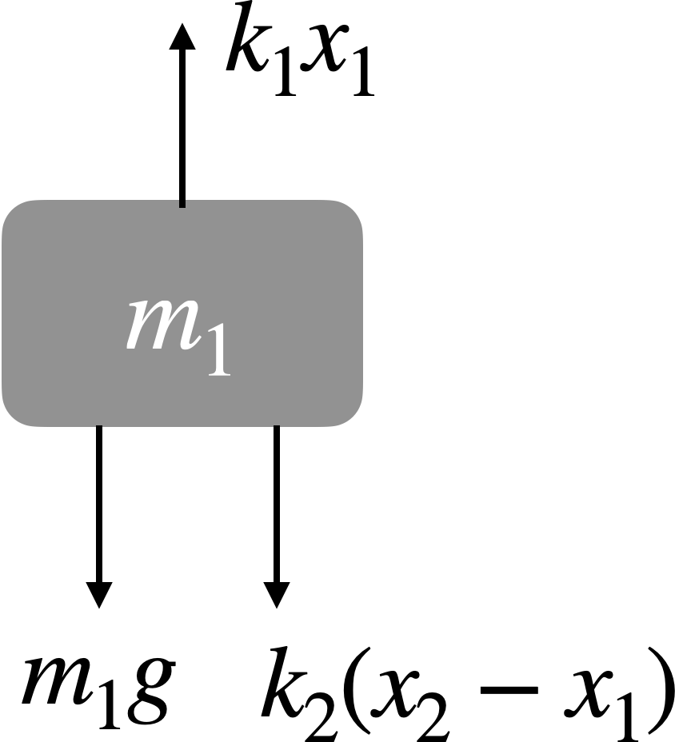

For the matrices and vectors defined below:
\[A = \begin{bmatrix} 1 & 2 & 3 \\ 4 & 5 & 6 \end{bmatrix} \quad b = \begin{bmatrix} 8\\ 3\\ 5 \end{bmatrix} \quad C = \begin{bmatrix} 1 & 2\\ 3 & 4\\ 5 & 6 \end{bmatrix}\]Compute the following:
\[a)\ A + C^T \quad b)\ 2 A \quad c)\ A b \quad d)\ b^T A^T \quad e)\ A A^T\]You are building a simple truss to suspend a load of 1000 lbs over a ravine. 
Node A is the origin of our coordinate system, node B is at (1, 0), and the location of node C is something we are trying to design. Be sure to use matrix form (this is just a small problem to keep things simple, which you could solve by hand without forming a matrix, but that won’t be true when we take on more realistic problems that are larger).
a) Solve the problem with node C at (2, 1).
b) Plot the force in truss member AC with \(x_c\) varied from 1 (just over node B) to 3.
Consider a spring mass system, which could be a mechanical system like a suspension on a car, or a biomechanical system like a human.
 If \(m_1 = 5\) kg, \(m_2 = 3\) kg, \(m_3 = 2\) kg, and \(k_1 = k_3\) = 100 kg/s\(^2\) and \(k_2\) = 150 kg/s\(^2\), solve for the steady-state position of the springs (\(x_1, x_2, x_3\)). Note that these positions are relative to their initial positions when no spring force exists as shown in the figure. Recall that steady-state means each mass is in force equilibrium. I’ve drawn the free-body diagram for the first mass to get you started. Again be sure to use matrix form. 
Given the following data points where \(y = f(x)\), we wish to determine a fit for the function \(f\) using linear least squares. Assume a quadratic function for \(f\), and plot the resulting data as a scatterplot and the curve fit as a solid line. You should use scipy.linalg.lstsq
x = np.array([-2.0000, -1.7895, -1.5789, -1.3684, -1.1579, -0.9474, -0.7368, -0.5263, -0.3158, -0.1053, 0.1053, 0.3158, 0.5263, 0.7368, 0.9474, 1.1579, 1.3684, 1.5789, 1.7895, 2.0000])
y = np.array([7.7859, 5.9142, 5.3145, 5.4135, 1.9367, 2.1692, 0.9295, 1.8957, -0.4215, 0.8553, 1.7963, 3.0314, 4.4279, 4.1884, 4.0957, 6.5956, 8.2930, 13.9876, 13.5700, 17.7481])